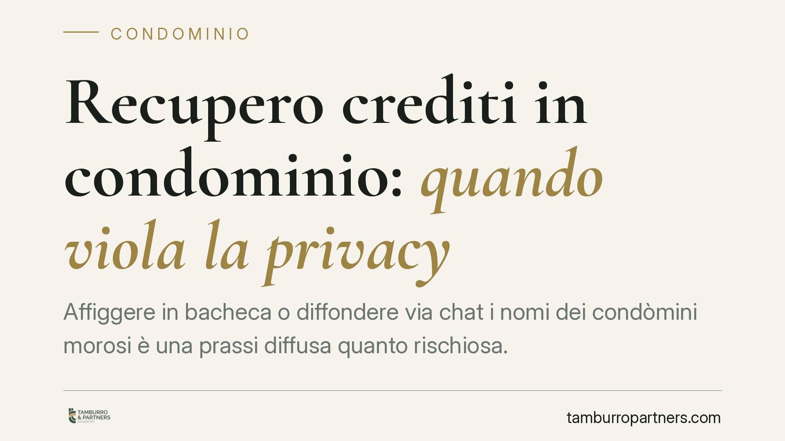

Recupero crediti in condominio: quando viola la privacy
Affiggere in bacheca o diffondere via chat i nomi dei condòmini morosi è una prassi diffusa quanto rischiosa. La divulgazione dei dati a una platea indeterminata viola la normativa sulla protezione dei dati personali. Il recupero del credito è legittimo, ma deve avvenire nelle sedi proprie. Vediamo i limiti e come muoversi senza esporsi a contestazioni.

Il caso: morosità e trasparenza non coincidono
La gestione dei condòmini morosi mette l'amministratore di fronte a un bilanciamento delicato: tutelare l'interesse economico del condominio senza diffondere dati personali oltre i limiti consentiti.
La prassi di esporre in bacheca l'elenco nominativo dei morosi, o di inoltrarlo nelle chat di messaggistica del fabbricato, è tra le più contestate. Il punto è semplice: un conto è rendere conoscibile il dato a chi ha titolo per conoscerlo, un altro è esporlo a una platea indeterminata, includendo soggetti estranei al rapporto condominiale.
Inquadramento normativo
Il trattamento dei dati dei condòmini è regolato dal Regolamento UE 2016/679 (GDPR). Rilevano in particolare due disposizioni.
L'articolo 5 GDPR fissa i principi di liceità, correttezza e trasparenza, oltre a quello di minimizzazione: si possono trattare solo i dati adeguati, pertinenti e limitati a quanto necessario rispetto alle finalità.
L'articolo 6 GDPR individua la base giuridica del trattamento. Nel recupero crediti condominiale la base è duplice: l'esecuzione di un obbligo gestorio e il legittimo interesse del condominio (art. 6, par. 1, lett. f) a riscuotere quanto dovuto. Il legittimo interesse, però, non è illimitato: richiede un test di bilanciamento tra l'interesse del titolare e i diritti dell'interessato. La diffusione nominativa a terzi estranei fa pendere il bilanciamento a sfavore del condominio, perché eccede ciò che serve per recuperare il credito.
Sul punto resta un utile riferimento il vademecum del Garante per la protezione dei dati personali dedicato al condominio ("Il condominio e la privacy"), che chiarisce quali dati siano conoscibili dai condòmini e con quali modalità. In assenza di una pronuncia specifica da citare, è corretto ancorare l'analisi alla cornice del GDPR e agli orientamenti del Garante, senza attribuire ad alcuna autorità affermazioni non referenziate.
L'amministratore è titolare del trattamento
Un passaggio spesso trascurato: nel gestire i dati dei condòmini, l'amministratore agisce come titolare del trattamento. Su di lui gravano gli obblighi di liceità e sicurezza. È quindi l'amministratore a rispondere della diffusione impropria, non il condominio come entità astratta.
Questo significa che la scelta del canale e della platea non è una formalità: incide direttamente sulla responsabilità personale di chi gestisce l'immobile.
Le sedi proprie contro la divulgazione indeterminata
La linea di confine è netta.
Sono sedi proprie per far emergere la posizione del moroso:
- il bilancio e il rendiconto consuntivo, dove la morosità risulta dalle voci contabili;
- la discussione in assemblea, riservata ai soli condòmini;
- la documentazione contabile consultabile dagli aventi diritto.
È invece illecita la divulgazione a platea indeterminata: bacheche accessibili a chiunque, gruppi di messaggistica aperti anche a inquilini o fornitori, comunicazioni a soggetti privi di titolo.
Un'ultima precisazione dirimente: l'eventuale illiceità del trattamento dei dati non estingue il debito. Il condòmino che contesta la diffusione dei propri dati può agire a tutela della propria riservatezza, ma resta tenuto a pagare quanto dovuto. Sono due piani distinti, che non si compensano.
Implicazioni pratiche
Per l'amministratore il rischio è doppio: l'esposizione a un reclamo al Garante e a un'eventuale richiesta risarcitoria del condòmino. Per il condominio, il rischio è veder trasformato un legittimo recupero credito in un contenzioso sulla privacy che ne allunga i tempi.
Il recupero resta pienamente possibile: decreto ingiuntivo, solleciti individuali, azioni esecutive. Cambia il metodo, non il diritto.
Cosa fare in concreto
- Comunicare la morosità solo nelle sedi proprie: assemblea, bilancio, documenti contabili accessibili ai soli condòmini.
- Evitare affissioni in bacheca e invii in chat che includano soggetti estranei al rapporto condominiale.
- Usare canali individuali per i solleciti: lettera o PEC indirizzata al singolo moroso, non comunicazioni collettive nominative.
- Verificare la modulistica e le prassi di comunicazione adottate, così da circoscrivere i dati diffusi a quanto strettamente necessario.
- Procedere con gli strumenti di recupero (decreto ingiuntivo, azione esecutiva) senza affidarsi alla pressione reputazionale, che è la via più esposta a contestazioni.
Il principio guida è uno: si recupera il credito, non si espone il debitore.
Contributo informativo a cura di Tamburro & Partners - Avv. Giuseppe Tamburro. Non costituisce parere legale.
Ogni condominio ha una storia a sé.
Se gestisci un'amministrazione e vuoi un confronto su una specifica questione condominiale, scrivi allo studio. Ti rispondiamo entro un giorno lavorativo.